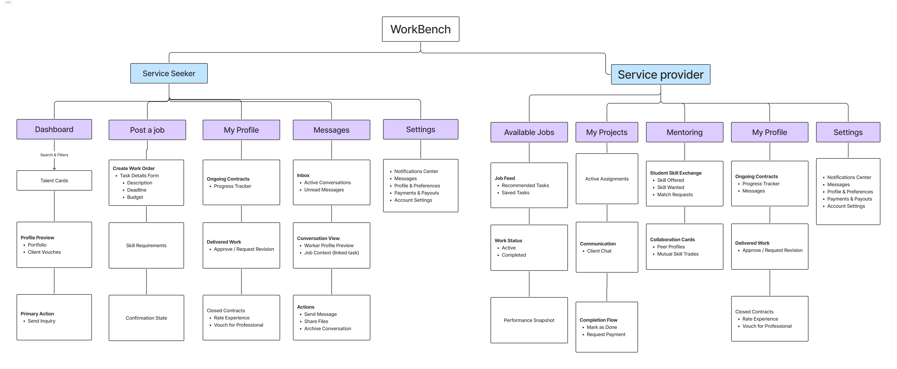
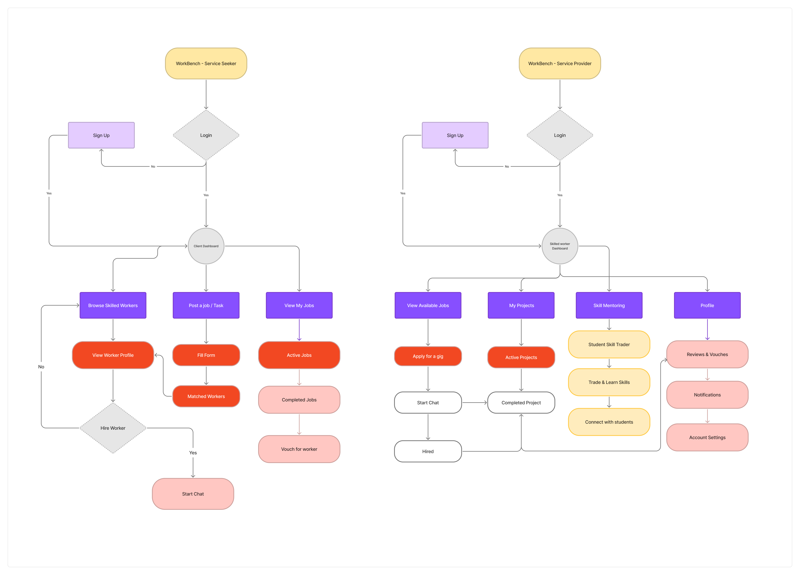
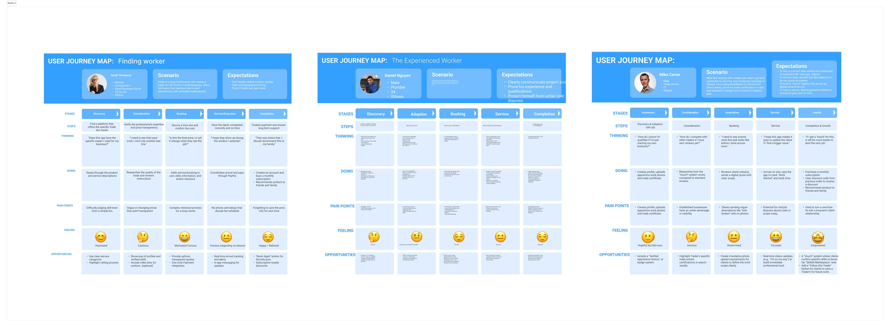
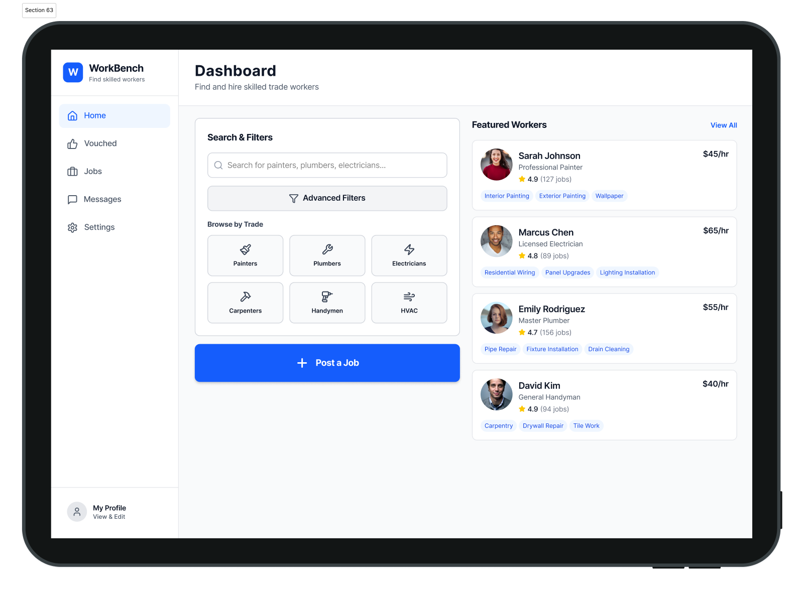
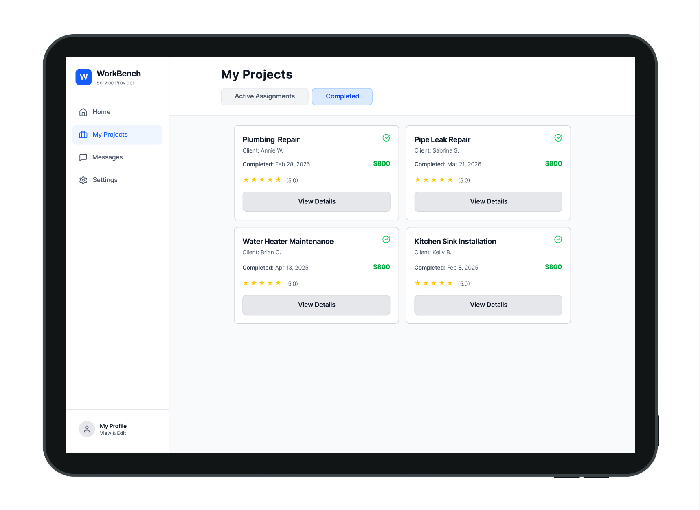
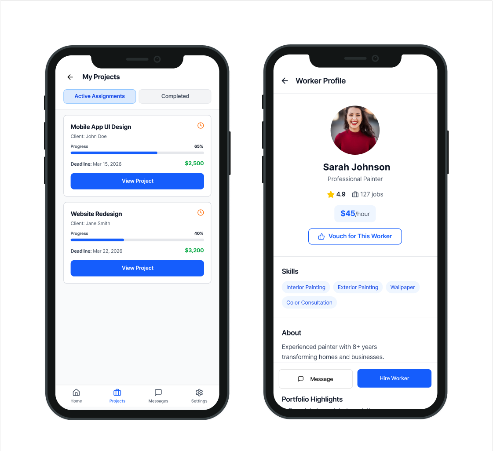

Mission
Modernize the skilled trades by connecting verified talent and clients through a fair, accessible, and worker-first digital platform that supports real careers, not just short-term gigs.
UX Case Study · Skilled Trades Platform
WorkBench is a mobile-first marketplace concept that connects verified trades talent with real job opportunities through a fairer, clearer, and more trustworthy experience for both workers and clients.
View projectProject Overview
Modernize the skilled trades by connecting verified talent and clients through a fair, accessible, and worker-first digital platform that supports real careers, not just short-term gigs.
Help skilled tradespeople find clients, apprenticeships, and long-term opportunities in a mobile-first, low-friction experience that works in real job-site conditions.
Skilled tradespeople, apprentices, and underrepresented groups entering the trades, along with homeowners, contractors, and firms looking for verified talent.
A worker-first platform connecting verified trades talent with real opportunities — built for the job site, not the desk.
The Problem
Most workers in the skilled trades rely on word of mouth to raise awareness of their businesses. This makes it harder for new or independent workers to prove themselves, while clients remain limited in the amount of reliable information they can access when comparing options.
At the same time, referral-based systems tend to favour already established businesses. That creates an uneven landscape where skilled workers struggle to gain visibility, and clients may never discover the best fit.
Irregular job flow, low visibility, payment anxiety, and too much admin.
Difficulty judging skill, unclear pricing, poor communication, and trust concerns.
Existing platforms are either too generic or optimized for short gigs instead of real trade careers.
Research & Discovery
Our research centered around labor shortages, trust in trades hiring, digital barriers, and the realities of mobile use in job-site environments.
Reviewed services like TaskRabbit and general job boards to identify limitations in skill verification, long-term growth, and worker-centered design.
Explored labor shortages, digital transformation in trades, and barriers affecting accessibility, trust, and entry into the industry.
Built journeys for three target users to identify emotional friction, pain points, and opportunity areas across discovery, booking, service, and completion.
Used FigJam, Miro, and collaborative ideation to define the product structure and core marketplace journeys.
Workers need visibility and credibility, especially when they are new, independent, or early in their careers.
Clients need stronger trust signals than a short bio — proof of skill, reviews, certifications, and past work matter.
Communication around scope, timing, and expectations is one of the biggest sources of friction on both sides.
Trade users need tools that feel lightweight and fast, not systems that add more complexity or form-heavy workflows.
Personas
Homeowner / Small Business Owner
Sarah is tech-savvy but cautious. She wants reliable workers, transparent pricing, and proof of past work before making a hiring decision.
Experienced Worker
Daniel is an experienced plumber who does not struggle to find work, but needs a better system for communicating scope, storing arrangements, and protecting himself from disputes.
New Independent Tradesperson
Mike recently started his own handyman business and needs a platform that helps him prove credibility, compete with established businesses, and generate steady client flow.
User Journeys
Discovery → Consideration → Booking → Service → Completion
Sarah’s journey revealed that trust and pricing clarity need to appear early, while updates and no-show prevention become critical during service execution.
Discovery → Adoption → Booking → Service → Completion
Daniel’s journey highlighted the need for better benefit communication, easier credential proof, shared appointment visibility, and protection around changes or disputes.
Awareness → Consideration → Booking → Service → Loyalty
Mike’s experience emphasized the need for visibility tools like badges, a vouch system, and stronger support for workers without an established review history.

Information Architecture

Core User Flows
From account access to hiring and completing the job.
Login or sign up
Enter client dashboard
Browse skilled workers or post a job
View worker profile
Start chat and clarify details
Hire worker and manage active jobs
From setup and discovery to hiring, projects, and reviews.
Login or sign up
Open worker dashboard
View available jobs
Apply for a gig or start chat
Get hired and manage active projects
Complete work and receive vouches

Design Process
The concept focused on clean, mobile-first flows that reduce cognitive load for workers using the platform in busy, fast-moving environments.
Ideas like a vouch system and student starter support emerged as ways to help early-career users gain credibility and enter the market more fairly.
The booking phase required the most iteration because it needed to balance clarity, communication, and booking security for both sides of the marketplace.



Proposed Solution
Showcase certifications, past work, and trust signals that go beyond a simple bio.
Create digital word-of-mouth to help newer workers build credibility and surface specific strengths.
Support faster communication with less friction around scope, changes, and scheduling.
Reduce confusion through shared expectations, visible details, and stronger process checkpoints.
Reflection
The hardest part was finalizing the booking phase in a way that felt reliable and clear for both workers and clients, especially in situations where details, timing, or scope might shift.
Designing a two-sided platform means every decision affects two user groups at once. Trust, communication, and structure need to be built into the system from the beginning, not added later.
I would continue refining the booking flow and further explore features like the vouch system and student starter support to strengthen entry points for less established workers.
UX Case Study · Restaurant Website Redesign
A solo website redesign focused on strengthening storytelling, menu clarity, branding consistency, and the overall perception of Craft Seafood as a destination-worthy dining experience.
View projectProject Overview

This project is a restaurant website redesign intended to improve usability, strengthen brand perception, and better communicate the restaurant’s unique dry-aged seafood concept.
Urban professionals and food enthusiasts aged 25–55 in Ottawa neighborhoods like Westboro, the Glebe, and Centretown.
Users research menus online before visiting, value sustainability and craftsmanship, and are willing to pay a premium for quality and transparent sourcing.
Shift the restaurant’s perception from a misunderstood hidden gem to a must-visit culinary destination.
The Problem
Craft Seafood is a restaurant website redesign intended to improve usability, strengthen brand perception, and better communicate the restaurant’s unique dry-aged seafood concept.
Visitors could easily perceive the restaurant as experimental or expensive without understanding the craftsmanship behind it. The site needed stronger narrative, visual hierarchy, and structure to support trust and booking intent.
The site did not explain dry-aged seafood clearly enough for new visitors.
Typography, contrast, and iconography did not fully reflect the restaurant’s artisanal-modern identity.
The family-run story and craftsmanship were underrepresented in the digital experience.
Strategic Goals
Use visuals and content to explain the value of dry-aged seafood and transform unfamiliar ingredients into compelling highlights.
Differentiate the restaurant from corporate competitors by emphasizing personal story, heritage, and authenticity.
Improve contrast, typography, iconography, and consistency across the website and brand materials.
Move from “experimental and misunderstood” toward a premium culinary destination people actively seek out.
Target Audience
Refined Local Diner
Seeks technical excellence, quiet sophistication, and world-class culinary craft over trend-driven dining.
Occasion Planner
Needs a reliable, polished, and easy-to-book experience for celebrations and meaningful gatherings.
Food Explorer
Searches for authentic local dining experiences with strong visual identity, story, and distinct culinary reputation.
Brand Development
Refined the logo through an evolutionary lens to preserve familiarity while improving flexibility across digital and print use.
Adjusted color combinations for stronger contrast, readability, and a more premium visual tone.
Audited and refined typography to support a tone that feels expert, authentic, and approachable.
Proposed a more consistent icon style to improve clarity and overall design cohesion.
Website Optimization
Updated color combinations to improve accessibility and readability.
Retained the core architecture while scaling the design for evolving business needs.
Proposed improvements to visual asset quality and site clarity to support a better overall experience.
Used imagery and structure to better communicate quality, process, and atmosphere.
Information Architecture
The sitemap was redesigned to support the way users research restaurants: menu first, story second, reservation always visible.

Website Structure
Introduces the concept, highlights dry-aged seafood, and surfaces reservation access quickly.
Presents the restaurant’s main menus with clearer categories and stronger visual support.
Creates a dedicated space for wine exploration and pairings by category.
Communicates story, chef identity, and family-run authenticity.
Design Challenge
One of the biggest challenges was converting the restaurant’s three PDF menus — main, lunch, and wine — into a more cohesive digital experience supported by photography and hierarchy.
The original site also suffered from corrupted images, weak logo presentation, and visual clutter, which reduced trust and weakened the premium perception of the brand.
Static files limited browsing, storytelling, and feature highlighting.
Corrupted imagery and weak visual assets made the experience feel less premium.
Hierarchy and navigation did not clearly guide users toward menus, story, and booking.
Solution
Restructured the menu experience around photography, hierarchy, and clearer categories.
Made menus, reservations, and key content easier to find and understand.
Prioritized food photography and process visuals to support perception and trust.
Reduced clutter and created a more premium, story-led user experience.
Reflection
The hardest part was converting the restaurant’s PDF-based menus into a richer web experience supported by photography and structure.
Restaurant websites need to function as both informational tools and emotional storytelling platforms.
I would continue refining the interactive menu experience and deepen the connection between brand story and booking flow.